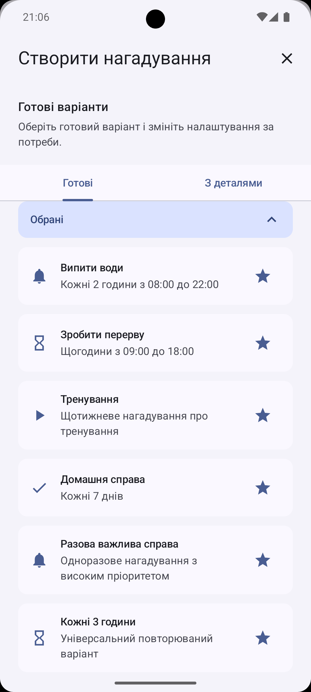
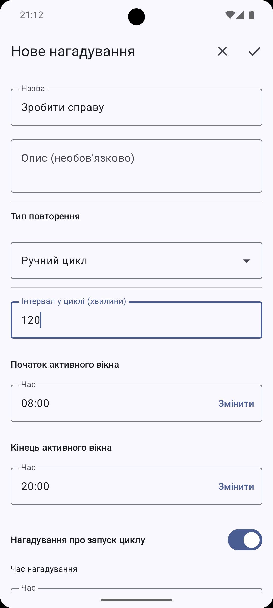
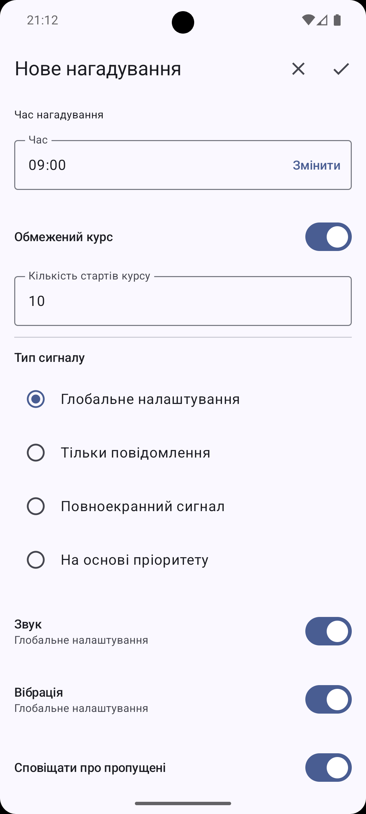
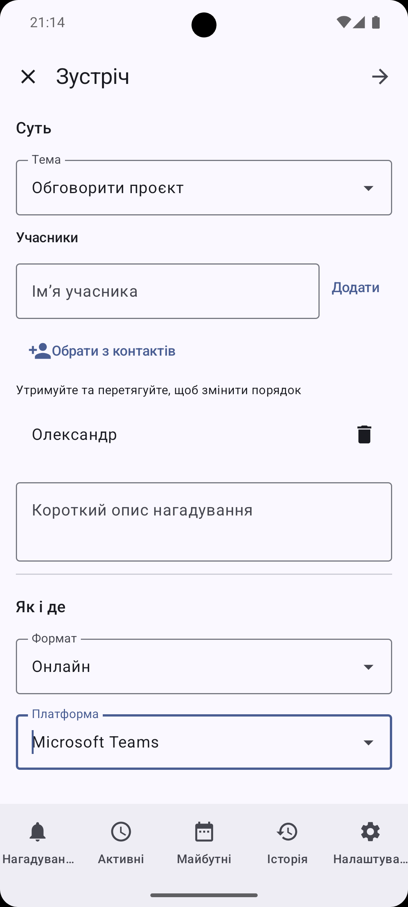
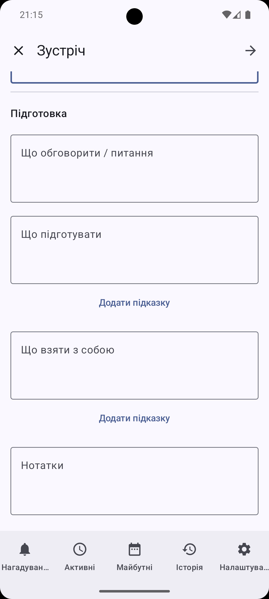
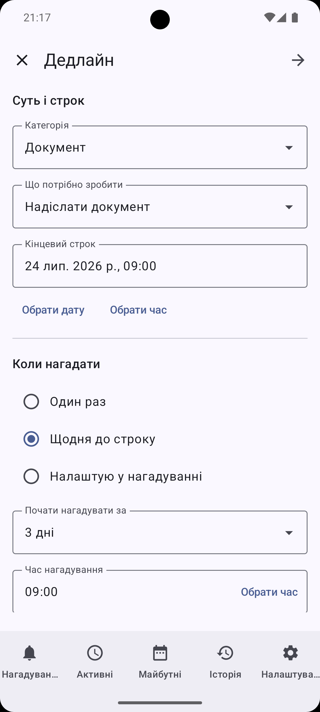
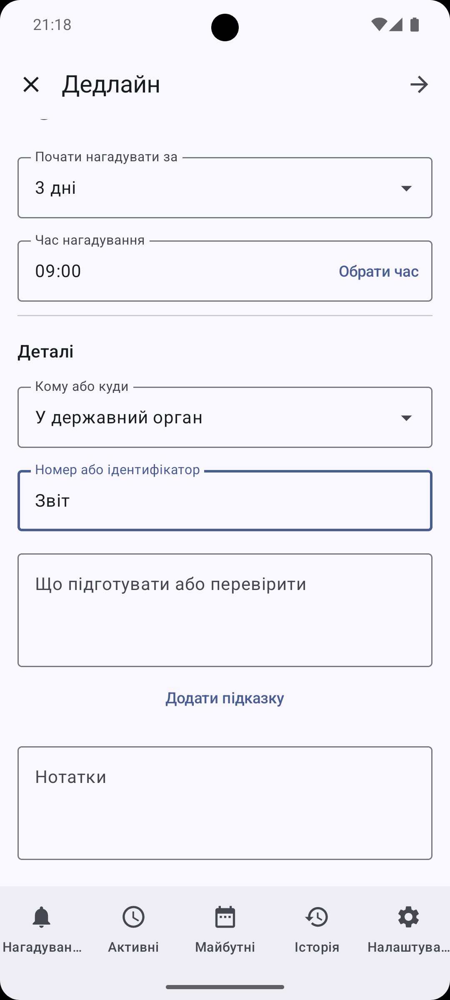

За графіком
12:0015:0018:00
Відклали сигнал на 15 хвилин — наступне нагадування лишається у своєму звичному часі.
DKReminder — менеджер нагадувань
Обирайте готові варіанти, налаштовуйте гнучкі повторення й зберігайте деталі справ — щоб повертатися до них у потрібний момент.
Почати легко
Оберіть варіант для частих справ: води, перерв, дому, документів, тренувань або важливих подій. Змініть назву, час і повторення під себе — перед збереженням усе лишається під вашим контролем.
Десятки готових варіантів для частих справ.

Ваш ритм
Для регулярних справ можна обрати зрозумілий спосіб відліку — за заданим графіком або від моменту, коли ви завершили попередню дію.
Відклали сигнал на 15 хвилин — наступне нагадування лишається у своєму звичному часі.
Завершили дію о 12:15 — наступний інтервал починається від 12:15.
Відкладайте, завершуйте, переглядайте історію та за потреби отримуйте зведення про пропущені нагадування.


Починайте, коли зручно
DKReminder нагадає почати. Ви запускаєте серію у зручний момент, а наступні спрацювання йдуть від реального старту в межах обраного часу.
Запустили серію о 9:30 з двогодинним інтервалом — наступні нагадування надійдуть о 11:30, 13:30 та далі в межах обраного часу.
Коли важливий не лише час
Для зустрічі або дедлайну можна зібрати потрібні деталі в одному місці, а потім повернутися до них у потрібний момент.
Учасники, формат, онлайн-платформа, питання та підготовка — усе, що варто мати перед розмовою.


Строк, коли нагадати, кому або куди потрібно звернутися, що підготувати чи перевірити.


Приватність
DKReminder не потребує акаунта, не надсилає ваші нагадування на сервери розробника та не використовує рекламні або аналітичні SDK.
Додайте важливе в систему нагадувань уже зараз — і повертайтеся до нього тоді, коли це справді потрібно.